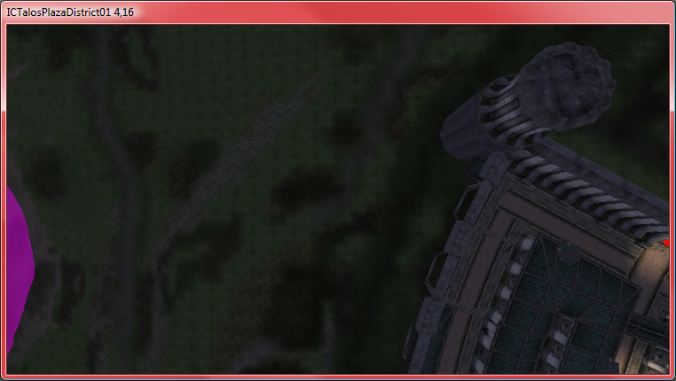
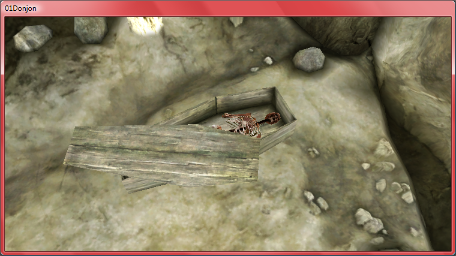
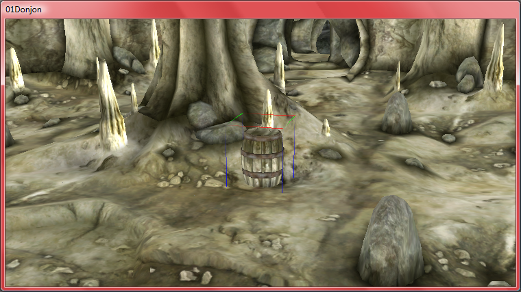
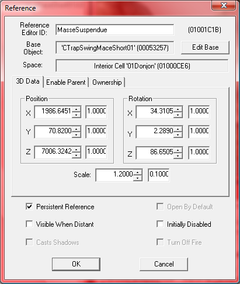
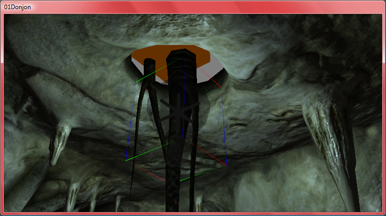
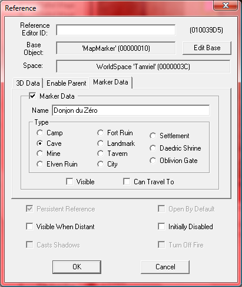
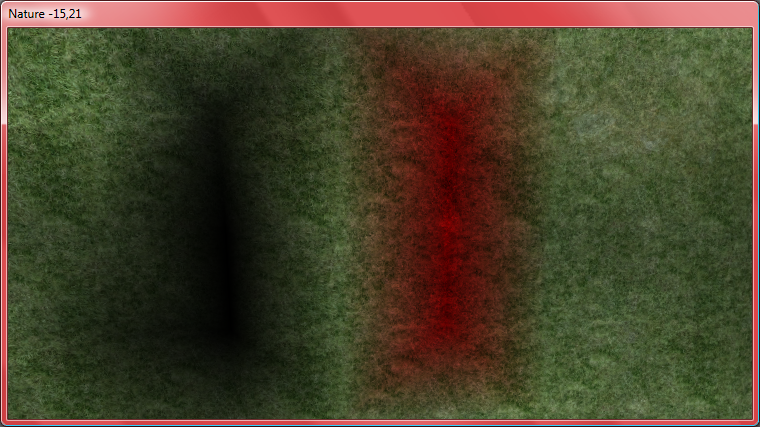
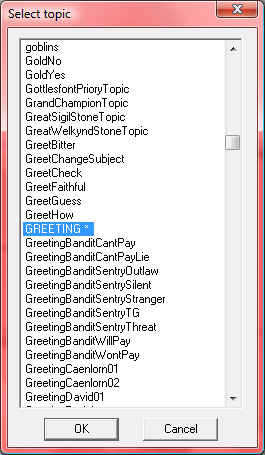
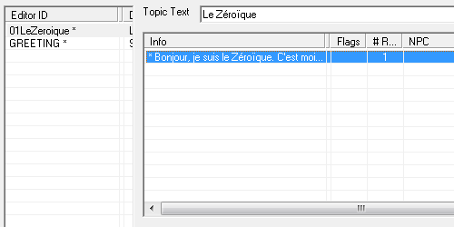

Créer des mods pour Oblivion avec TES construction Set
Vous jouez au dernier volet (jusqu'à aujourd'hui) de la saga The Elder Scrolls : Oblivion et vous souhaitez y ajouter vos touches personnelles, créer de nouvelles quêtes à partir de rien, de nouveaux objets...?
Eh bien rassurez-vous : vous êtes au bon endroit.
Dans ce tutoriel, vous apprendrez les bases du logiciel gratuit distribué par The Elder Scrolls : TES Construction Set. Nous explorerons les fonctionnalités les plus intéressantes du logiciel pour mener à bien vos mods.
Si vous ne disposez pas encore de ce jeu, vous ne pourrez en aucun cas avoir un quelconque intérêt à modder pour Oblivion (c'est d'une logique irréfutable). Mais si vous avez déjà ce jeu, il FAUT qu'il soit sur plate-forme PC.
C'est presque évident mais je préfère le souligner maintenant. Nous allons créer nos mods sur ordinateur et pour ordinateur.
Maintenant, pour passer au jeu en lui-même, vous avez peut-être déjà téléchargé des mods sur Internet. Si c'est le cas, vous avez une idée de ce que l'on peut faire grâce à eux.
Sachez également qu'Oblivion n'est pas le premier de la saga : c'est le quatrième volet (après Arena, Daggerfall et Morrowind). Il existe une version de TES Construction Set (le logiciel que nous allons utiliser pour faire nos mods) faite pour Morrowind. En aucun cas les mods de Morrowind ne fonctionneront pour Oblivion (et inversement).
Ce mot anglophone est tout simplement le diminutif de modification. Un mod est une sorte d'extension d'un jeu vidéo. Il modifie des éléments du jeu, en rajoute, en supprime, etc. Certains peuvent même modifier totalement le jeu (mais pour arriver à un tel résultat, cela nécessitera un dur labeur :-° ). Le développeur du mod, celui qui le conçoit, voit s'attribuer le titre de modeur. Mais TES Construction Set n'est pas un cas isolé : beaucoup de jeux sur ordinateur utilisent ce pouvoir pour que le grand public puisse modifier un jeu. Cette fonctionnalité est très intéressante mais parfois trop peu aboutie ou trop compliquée. Je vous rassure tout de suite :
Maintenant, voici plus d'informations sur les mods d'Oblivion.
Qu'est-ce que permet un mod TES* précisément ? *TES : abréviation de The Elder Scrolls.
Si vous avez un minimum joué à Oblivion, vous pourrez comprendre le vocabulaire suivant (dans le cas contraire, je vous conseille d'y jouer pour maîtriser un peu le système du jeu).
Grâce à un mod pour Oblivion, vous pourrez accomplir de très diverses actions. Voici une liste non exhaustive :
modifier/créer des objets (armes, armures, ingrédients...) ;
créer des personnages (choisir le nom, la race, les dialogues...) ;
créer des quêtes de toutes pièces ;
créer de nouveaux endroits (maisons, donjons...) ;
créer de nouvelles races ;
créer de nouvelles classes, modifier les compétences ;
ajouter/modifier du script.
D'ailleurs, pour créer de toutes pièces un objet, un personnage... à partir de rien, il vous faut modéliser des objets 3D vous-même ou en acquérir, ainsi qu'une icône si nécessaire. Vous pouvez toujours prendre les modèles d'Oblivion mais vous ne pourrez pas changer leurs apparences (meshes pour être précis) car TES Construction Set ne le permet pas.
À ce propos, pour les objets que vous créerez (si vous le souhaitez), pensez à exporter votre travail en .NIF et les textures en .DDS (seuls formats compatibles pour Bethesda). Vous pouvez télécharger des extensions permettant de telles exportations ici.
Mais alors, comment fonctionne un mod, affecte-t-il le jeu pour toujours ou peut-on paramétrer son activation ?
Heureusement oui : on décide d'activer ou non un mod. Tant qu'il n'est pas activé, toutes les modifications ne seront pas présentes dans le jeu. Et là je sens la question venir :
Mais comment active-t-on un mod ?
C'est très simple, tout d'abord, si vous téléchargez un mod venant d'Internet (c'est-à-dire que vous n'avez pas créé vous-même), il faut placer le fichier dans le répertoire C:/Programs files/Bethesda Softworks/Oblivion/Data. Ensuite, lors du launcher d'Oblivion, cliquez sur Fichier de données et cochez le mod en question dans la liste. Ensuite, vous n'avez plus qu'à jouer !
En revanche, si vous voulez jouer avec un mod que vous avez vous-même développé, vous n'avez qu'à le cocher dans Fichiers de données : il est déjà présent dans le fichier Data.
Avant de passer au logiciel, j'aimerais préciser une chose : si vous activez un mod qui rajoute un objet par exemple et que vous prenez cet objet avec votre personnage, que vous sauvegardez ensuite, que vous quittez et rejouez plus tard sans activer le mod, l'objet aura disparu. D'ailleurs, un message vous l'indiquera si vous chargez une partie sans le mod. Mais, par défaut, ce dernier reste coché.
Notez que ce logiciel prendra racine dans le dossier C:/Progams files/Bethesda Softworks/Oblivion et que vos mods seront par défaut sauvegardés dans le dossier Data.
Premier lancement
Après avoir double-cliqué sur le couteau suisse (eh oui, c'est bien l'icône de Construction Set), vous devriez avoir ceci (sans les couleurs) :
Vous remarquerez que l'essentiel de l'interface est divisé en quatre : trois fenêtres en plus de la barre d'outils.
En violet :
Des menus déroulants et des boutons, qui ne nous serviront pas énormément dans nos premiers mods. Avec bien entendu, des fonctionnalités universelles telles que Ouvrir, Sauvegarder, etc.
En rouge :
C'est l'Object Window (en français : fenêtre des objets) est, comme son nom l'indique, la liste de tous les objets du jeu. Mais prenez garde : les objets sont à la fois les armes, les armures, les ingrédients... mais aussi les personnages du jeu (habituez-vous à NPC : No Player Character -> Personnage Non Joueur), les créatures, les éléments du décor, les sorts, les enchantements, etc. Bref, tout ce qui touche à la composition graphique du jeu (et même quelquefois à certaines informations que l'on ne peut voir, comme Miscellaneous).
En vert :
C'est la Cell View. C'est dans cette fenêtre que nous choisirons l'endroit du jeu qui s'affichera dans la Render Window. Mais prenez plutôt l'habitude de dire cellule. Par ailleurs, celles-ci sont classées par ordre alphabétique et triées dans plusieurs blocs : par exemple, le bloc Interiors regroupe toutes les cellules d'intérieur (c'est-à-dire l'intérieur des maisons, des grottes...). Le bloc ICTalosPlazaDistrict regroupe l'extérieur de la place de Talos, dans la Cité Impériale.
En orange :
Une fenêtre non moins intéressante : la Render Window (la fenêtre de rendu). C'est ici que les éléments visibles du jeu s'afficheront, comme dans une vraie partie (mis à part que l'on pourra se déplacer dans les airs comme on le souhaite, en spectateur). Elle sert à insérer des éléments directement dans le jeu. Mais la Render Window n'affiche pas tout le jeu d'un coup. Non, ce serait trop long et difficile à gérer. Elle se contente d'afficher une portion de la carte ou d'un lieu. On choisit ce lieu dans la Cell View.
Mais, depuis tout à l'heure, je vous parle des cellules, des objets... mais si vous avez essayé de suivre avec moi, vous n'avez pas pu. En effet, rien (ou presque) ne s'affiche : le seul objet est Player, la seule cellule est Wilderness... c'est un peu bizarre de voir qu'Oblivion ne contient qu'un seul endroit, qu'un seul personnage... aucune arme.
Vous n'avez qu'une seule démarche à faire : Fichier -> Data -> Oblivion.esm. Ensuite, suivant la puissance de votre ordinateur, le chargement du fichier sera plus ou moins long (entre 20 secondes et 5 minutes grand maximum). Pour chaque nouveau mod, vous devrez ouvrir Oblivion.esm (ou alors, si vous êtes audacieux, débuter un jeu depuis le tout début...).
Mais en attendant que ça charge, voici deux petites explications pour les extensions :
Oblivion.esm : c'est le fichier maître, c'est le jeu Oblivion tout simplement (esm = Elder Scrolls Master-file)
mod.esp : c'est l'extension d'un mod (esp = Elder Scrolls Plugin)
Alors, ça y est, c'est chargé ? Vous remarquerez tout de suite que les éléments sont présents : un nombre hallucinant de cellules, d'objets, etc.
Nous allons nous y attaquer tout de suite.
Donc vous savez maintenant à quoi vous attendre. J'espère que vous êtes prêts car nous allons tout de suite créer notre premier mod.
Dans cette première partie, nous allons nous attarder principalement sur la fenêtre des objets, nommée Object Window.
Voici un petit rappel de son apparence :
L'arborescence
C'est en fait une énorme arborescence d'objets, divisés en catégories. J'ai nommé :
Actors (comprenant les NPC, les créatures...) ;
Items (tous les objets pouvant être placés dans l'inventaire du joueur) ;
Magic (tout ce qui touche à la magie : sorts, enchantements...) ;
Miscellaneous (catégorie spéciale qui regroupe les styles de combats, les bruitages, les textures...) ;
WorldObjects (les éléments de décors, les coffres...).
On remarquera également que la fenêtre est découpée en deux parties : à gauche se trouve l'arborescence des catégories et à droite le contenu de celles-ci.
Nous avons expliqué l'arborescence, reste le contenu. C'est une liste d'éléments classés par ordre alphabétique (par défaut) et comprenant plusieurs colonnes. Nous n'allons voir que les plus importantes et celles que vous êtes en mesure de comprendre.
Editor ID
Une ligne dans la liste correspond à un objet. Cet objet est référencé dans le jeu grâce à un identifiant, autrement appelé l'Editor ID ou l'ID. On préférera dire le terme en entier (EditorID) pour ne pas confondre avec une autre sorte d'identifiant (que nous verrons tout à l'heure). Un ID n'est pas choisi au hasard. En effet, il a un rapport avec l'objet. Prenons pour exemple le premier objet de la première catégorie (Actors -> Creature) : AnvilMGPetImp.
Si vous avez un peu de mal avec l'anglais, vous aurez aussi un peu de mal à déchiffrer les EditorID. Si on connaît un peu le jeu, on pourra déduire que AnvilMGPetImp est un objet qui se trouve à Anvil, dans la Guilde des Mages (MG = Mage Guild), que c'est un animal de compagnie (Pet) et que, mais vous ne pouviez pas le deviner, Imp est caractéristique des Lutins (AnvilMGPetImp en est un).
Bref, les préfixes et suffixes ne sont pas là pour rien, faites-y attention. En revanche, pour les objets que vous voudrez vous-même créer, rien ne vous oblige à les classer de cette façon.
Pour des EditorID composés, mettez des majuscules entre chaque mot (les espaces sont interdits). Exemple : SiteDuZero.
Une dernière chose, l'EditorID ne représente pas le nom que le joueur verra apparaître en jouant.
Count
Cette colonne nous indique le nombre de fois où l'objet est utilisé dans le jeu. Toujours dans notre exemple, AnvilMGPetImp est une créature unique est n'est présente qu'une seule fois.
Mais alors, si je regarde dans CGRat01, qui est l'ennemi très commun Rat, n'y est-il que douze fois seulement ?
En fait, non. Je vous rassure, il n'y a pas que douze Rats présents dans le jeu. L'explication est la suivante : lorsque l'on crée un donjon (de type « cave » par exemple), les ennemis placés sont très rarement placés directement. En fait, on utilise plus souvent une LeveledCreature (une sous-catégorie porte ce nom). En vérité, on fait apparaître une créature adaptée au niveau du joueur, et pas directement un Rat. Rassurez-vous, nous verrons cela plus en détail en temps voulu.
Users
Ce terme définit les informations de l'objet dans le jeu : en faisant un clic droit sur l'objet dans l'Object Window et en choisissant Use info, on ouvre ceci :
C'est dans cette fenêtre que l'on verra si l'objet est utilisé dans des coffres, dans un inventaire... mais aussi dans quelle(s) cellule(s) il se trouve.
Name
Sans plus d'explications, c'est le nom de l'objet que vous verrez apparaître dans le jeu. Il est bien souvent différent de l'EditorID.
Autres colonnes
Les autres informations sont sa présence ou non dans un inventaire, les textures/meshes utilisées, si c'est un objet de quête ou non, son niveau...
Intéressons-nous en détail à un seul objet !
Modifier/Créer un objet
En double-cliquant sur un objet (prenons toujours AnvilMGPetImp), on arrive sur une fenêtre depuis laquelle on peut modifier l'objet.
Suivant le type d'objet sélectionné, les informations ne seront pas les mêmes. Aussi je ne vais pas les décrire toutes alors si vous avez un souci de compréhension, n'hésitez pas à le demander via les commentaires !
Changer l'EditorID
La manipulation est très simple. Souvenez-vous seulement qu'il doit être unique et sans caractères spéciaux.
Pour notre exemple, AnvilMGPetImp, nous le modifierons en 01Zozor.
Changer le nom
Cette fois, aucune restriction telle que des préfixes ou des limites de caractères : vous mettez le nom que vous désirez voir s'afficher dans le jeu. Pensez à ne pas écrire trop long... Pour nous, ce sera juste Zozor.
Nous n'allons rien modifier d'autre pour le moment. Dans de prochaines parties, nous apprendrons à créer des objets à partir de rien. Mais vous remarquerez bien vite que le plus simple est d'en prendre des déjà existants pour modèles.
Créer un nouvel objet
Quand vous validerez avec OK, une petite fenêtre apparaîtra :
Pas de panique, c'est juste TESCS qui nous informe que nous avons changé l'EditorID d'origine et nous demande si nous souhaitons créer un nouvel objet ou remplacer l'actuel. Dans notre cas, nous choisirons Oui.
Par exemple, si nous voulions modifier un objet et le remplacer, toutes les fois où cet objet était présent dans le jeu seraient modifiées. Ainsi, si l'on avait changé le nom de Rat en Souris, tous les Rats du jeu se seraient appelés Souris.
Maintenant que nous avons créé un objet, nous allons le placer dans une cellule.
Avant de placer des objets dans le jeu, vous devez savoir deux ou trois choses sur la procédure.
Le jeu d'Oblivion est extrêmement grand. Imaginez que pour placer des éléments, le logiciel devrait charger toute la carte d'un coup ! Évidemment non. En fait, la carte est divisée en cellules.
Qu'est-ce qu'une cellule ?
Une cellule est un lieu de la carte et fait partie d'un World Space. Par exemple, il y a la cellule AbandonnedMine (Mine abandonnée). Elle est l'endroit de la carte appelé Mine abandonnée. Elle fait partie du bloc Interiors. Une cellule est composée d'éléments d'architecture tels que des murs, portes, mais aussi d'objets comme des coffres, des personnages, des ennemis... Bref, c'est un endroit précis de la carte.
Étudions la Cell View.
Informations
À gauche (en vert) sont représentées les informations de la cellule telles que son EditorID, son nom dans le jeu, et sa location. Il y a 2 types de location, qui dépendent du bloc.
Contenu
Le contenu (objets) de la cellule est listé dans ce cadre. Vous avez accès à certaines informations les concernant.
Bloc
Il existe des catégories de cellules, liées à leur emplacement sur la carte. Nous avons le grand groupe Interiors qui intègre toutes les cellules d'intérieur. C'est-à-dire, l'intérieur de toutes les maisons, de tous les donjons... Les autres groupes sont des endroits d'extérieur. Cela signifie qu'ils contiennent des portes qui amènent le personnage vers d'autres cellules d'extérieur ou des cellules d'intérieur (contenues dans Interiors). Par exemple le bloc AnvilWorld correspond à la ville d'Anvil et ses alentours d'extérieur. Les intérieurs de tous les bâtiments d'Anvil sont dans le bloc Interiors. Pour en revenir aux locations, celles d'intérieur sont simplement marquées Interior et celles d'extérieur sont exprimées en coordonnées.
Ouvrir une cellule
Quoi de plus simple qu'un double-clic ? La cellule se chargera plus ou moins rapidement, le temps étant influencé par le nombre d'objets présents.
À partir de maintenant, c'est dans la Render Window que ça se passe.
Nous avons compris le concept des cellules. Nous allons maintenant allier les objets aux cellules. Et c'est la Render Window qui s'en occupe.
Une fois que vous aurez ouvert une cellule, celle-ci devrait apparaître : prenons dans le bloc ICTalosPlazaDistrict (IC = Imperial City) la cellule ICTalosPlazaDistrict01.

Se déplacer
Pour naviguer dans les cellules par la Render Window, nous utiliserons la souris et les touches du clavier.
Tout d'abord, vous avez sans doute remarqué que l'on voyait le jeu depuis une caméra de type spectateur, on peut donc se déplacer librement dans les airs, à travers les murs, etc.
Le déplacement de base est la molette enfoncée. La molette tournée vous permet de zoomer/dézoomer. Essayez vous-même et rapprochez-vous du sol, jusqu'au centre de la place Talos.
Si vous regardez bien, vous êtes passé de la cellule ICTalosPlazaDistrict01 à ICTalosPlazaDistrict03 rien qu'en vous déplaçant. En fait, lorsque l'on ouvre une cellule d'extérieur, c'est tout le World Space qui s'ouvre. Pour les cellules d'intérieur, ce n'est pas le cas : tout le bloc ne s'ouvre pas !
Bref, nous allons maintenant ajouter Zozor, notre créature, dans la place Talos.
Placer un objet
Retournez dans l'Object Window puis sélectionnez 01Zozor.
Pour placer un objet dans une cellule, il suffit de faire un glisser-déposer : c'est-à-dire de déplacer (en laissant le clic gauche enfoncé) la ligne de l'objet dans la Render Window.
Si vous faites ainsi, vous aurez à peu près ce résultat :
Vous voyez apparaître 01Zozor dans la cellule. Vous voyez également qu'il est sélectionné grâce aux rectangles l'entourant. Les couleurs représentent les axes X en vert, Z en bleu et Y en rouge.
C'est là que nous allons avoir besoin de plus que la simple molette pour fonctionner.
Voici un tableau récapitulant les fonctions principales de navigation et de manipulation dans la Render Window :
Nom de la commande
Manipulation
Description
Déplacer la caméra
Molette ou touche Espace enfoncée.
Déplace la caméra.
Déplacer la caméra verrouillée sur un axe
Touche Z pour l'axe Z (de bas en haut), X pour l'axe X et Y pour l'axe Y.
Déplace la caméra selon l'axe.
Tourner la caméra
Touche Shift enfoncée.
Tourne la caméra autour de l'objet sélectionné.
Zoomer/Dézoomer
Tourner la molette ou maintenir V en bougeant la souris.
Se rapproche ou s'éloigne du centre de la fenêtre.
Sélectionner un/des objet(s)
Clic gauche sur un objet. Ctrl enfoncé ou rectangle de sélection pour plusieurs.
Sélectionne un ou plusieurs objets. Un objet est sélectionné si la « boîte » de sélection est présente autour.
Dé-sélectionner un/des objet(s)
Clic gauche dans un endroit de l'écran où aucun objet n'est sélectionné ou touche D.
Dé-sélectionne un ou plusieurs objets.
Centrer la caméra sur l'objet
Touche C.
Centre la caméra sur l'objet sélectionné.
Centrer la caméra en haut de l'objet
Touche T.
Centre la caméra en haut de l'objet sélectionné.
Poser un objet sur le sol
Touche F.
Pose le/les objet(s) sélectionné(s) au sol ou sur la première surface de collision.
Faire tourner un objet
Clic droit enfoncé puis bouger la souris.
Fait pivoter un objet sur l'axe Z. Appuyer sur X en même temps pour faire pivoter selon l'axe X et Z pour l'axe Y.
Supprimer un/des objet(s)
Touche Suppr..
Supprime le ou les objets sélectionnés.
Redimensionner un/des objets
Touche S enfoncée et déplacer la souris en clic gauche.
Redimensionne (proportionnellement) le ou les objets sélectionnés.
Commandes de presse-papier
Ctrl+Shift+C ou Ctrl+Shift+X et Ctrl+Shift+V
Le C copie, le X coupe et le V colle (au centre de la fenêtre).
Vous pouvez expérimenter les nouvelles fonctions, c'est même très conseillé. Mais là encore, vous ne les avez pas toutes. Il vous manque celles relatives au landscaping que nous verrons dans un prochain chapitre.
Revenons à 01Zozor et plaçons-le au sol (essayez de vous rappeler la touche avant d'aller regarder le tableau) et faisons-le pivoter pour qu'il soit dos à la statue au centre de la place. Après cela, vous devriez avoir :
Voilà, en apprenant les fonctions de base, nous avons créé notre premier mod simple. Nous n'avons plus qu'à le tester.
Maintenant que vous avez compris le système, attaquons-nous à la création d'un donjon complet !
Voilà, nous avons terminé un mod, il ne nous reste plus qu'à tester son bon fonctionnement.
Sauvegarder
Pour commencer, nous devons le sauvegarder : Fichier -> Save -> Choisir le nom.esp . Bien entendu, il ne faut pas modifier le répertoire de destination qui normalement est par défaut le Data d'Oblivion.
Une fois chose faite, vérifiez que le mod est bien présent dans Fichiers de Données.
Et maintenant vous n'avez plus qu'une seule chose à faire... ne pas cliquer sur Jouer et lire la suite ! En effet, réfléchissons quelques instants.
Pour tester un mod, que devons-nous faire ?
Pour tester un mod, il faudra aller visiter toutes les nouvelles cellules créées, tester tous les nouveaux objets, etc. Tout cela est bien beau, mais comment rendre ce travail plus rapide ? Dans le mod que nous avons créé, il n'est pas nécessaire d'aller vite : nous n'avons créé qu'un seul objet à partir d'un autre dont le fonctionnement est officiel (c'est Bethesda qui l'a fait tout de même). Nous l'avons placé dans une cellule d'extérieur... Bref, rien de bien compliqué.
Mais imaginez qu'il s'agisse un projet abouti qui comprend au moins une cellule d'intérieur, plusieurs LeveledCreature, de nouveaux objets, etc. D'un intérêt plus grand, mais d'un travail lui aussi plus important, en somme. D'ailleurs dans ce genre de projet vous devrez sûrement faire plusieurs tests pour ne pas revenir sur ce qui n'a pas fonctionné au début et que vous ne remarqueriez qu'à la fin.
La console
La console est une console comme vous en avez une sur votre ordinateur : une invite de commande, à partir de laquelle vous pourrez commander des actions bien précises. Vous les connaissez peut-être déjà. Mais comme beaucoup de joueurs, vous les utilisez comme cheat code car ils permettent beaucoup de choses.
La console peut s'activer en plein milieu du jeu, simplement en appuyant sur ² en dessous de la touche Echap ou Esc. Vous devriez alors voir un curseur blanc apparaître en bas à gauche de l'écran. De plus, le jeu se met en pause.
Voici désormais une liste de commandes qui nous seront utiles pour tester nos mods. Bien entendu, il en existe énormément.
Faire apparaître un objet dans l'inventaire
Si votre mod comprend de nouveaux objets que vous désirez tester, au lieu de créer un coffre, de le placer dans une cellule, d'aller le chercher... nous allons utiliser une fonction qui ajoute instantanément l'objet dans l'inventaire du joueur. Mais pour cela, nous aurons besoin du FormID. Non, pas l'EditorID mais bien le FormID. Vous vous rappelez quand je vous disais qu'il existait une autre forme d'identifiant ? Eh bien voilà.
Mais comment obtient-on le FormID ?
Dans l'Object Window, il existe une colonne cachée, est c'est précisément celle-ci qu'il nous faut. Elle se trouve entre la colonne EditorID et Count. Vous pouvez en effet apercevoir une petite épaisseur, que vous devez étirer lorsque la souris se transforme en double-flèche. Le FormID se présente sous la forme d'une suite de huit chiffres et lettres. Je vous conseille de noter les FormID que vous désirez sur un bout de papier pour vous en souvenir. Maintenant je peux vous dire la commande :
player.additem XXXXXXXX #
On utilise la commande player.additem pour ajouter l'objet et le FormID pour la référence de l'objet (ne marquez pas XXXXXXXX mais le FormID désiré). Quant au #, remplacez-le par un chiffre, qui indiquera le nombre de fois que l'objet sera ajouté.
Voici maintenant quelques explications quant à l'utilisation de la console :
Touche(s)
Effet
Touche ²
Ouvre/Ferme la console
Entrée
Valide la commande entrée.
▲ et ▼
Navigue dans les commandes déjà utilisées pour les recopier plus simplement.
Clic gauche
Interagit avec des éléments du jeu (pour certaines commandes).
Ajouter un sort
Vous voulez non pas tester un objet mais un sort ? La commande est du même type que la précédente.
player.addspell XXXXXXXX
Remplacez XXXXXXXX par le FormID du sort (qui se trouve dans la catégorie Magic -> Spell de l'Object Window).
Débloquer toutes les cellules
Si vous ne désirez pas avoir à traverser tout Cyrodill pour allez dans votre nouvelle cellule, vous pouvez débloquer tous les endroits de la carte en une seule commande. Cela vous permettra de vous y téléporter immédiatement.
tmm 1
N'oubliez pas l'espace !
Débloquer des serrures
Vous avez placé beaucoup de serrures dans votre nouveau donjon, des plus faciles aux plus difficiles et vous ne souhaitez pas avoir à toutes les ouvrir à chaque fois ? Il existe une commande pour déverrouiller instantanément une serrure, sans utiliser de crochets. Mais vous devrez activer la commande en ayant la serrure (le coffre, la porte verrouillée...) visible sur l'écran. Car nous allons devoir cliquer dessus.
unlock
Après avoir saisi unlock, vous devrez cliquer sur la serrure à déverrouiller. Son nom devrait s'afficher en haut de l'écran. Ce n'est qu'après que vous pourrez valider la commande avec Entrée.
Tuer un ou plusieurs ennemis
Vous ne voulez pas perdre de temps à tuer tous les ennemis du donjon ? Il existe une commande qui permet de tuer un NPC ou une créature (qu'il soit gentil ou mauvais) en interagissant avec lui.
kill
Après avoir saisi la commande, cliquez sur le personnage à tuer et appuyez sur Entrée.
Si vous voulez tuer tous les ennemis de la cellule, saisissez cette commande (cette fois, pas besoin de cliquer) :
killall
Mod invincible
Sûrement la commande la plus utilisée comme triche, elle permet d'avoir les PV, la magie, la fatigue, les munitions, les états d'armes/armures, etc. infinis et illimités . Ceci vous permettra de ne pas mourir dans vos propres donjons, en plein milieu d'un test.
tgm
Voilà, c'est suffisant je pense. J'espère que vous utiliserez ces commandes à bon escient et pas pour devenir le maître de Cyrodil.
Maintenant que nous savons comment tester, testons !
Cochez-le dans Fichiers de Données. Ensuite, je vous conseille de désactiver la sauvegarde automatique et de ne pas sauvegarder manuellement au cours du test. Rendez-vous à/aux endroit(s) modifié(s)/créé(s). Dans notre exemple, téléportez-vous au Quartier de la Place Talos et vérifiez que Zozor est bien là. Et vous remarquerez qu'il n'y a rien de bien extraordinaire : il vole sur place, ne parle pas... en fait c'est nul ! Ce n'est pas un vrai mod, c'était juste en apprentissage des commandes basiques. Nous allons les approfondir pour créer des mods complets avec un scénario : une quête et un donjon.
Il est très probable que des bugs surviennent, que vous ayez oublié des choses... Il paraît logique de réouvrir l'ancien mod et de modifier en conséquence. Vous pouvez aussi ne pas avoir le temps de créer un mod complet d'un seul coup et enregistrer le travail actuel pour le reprendre plus tard. Mais figurez-vous qu'il faut faire une petite manipulation avant, sous peine de devoir sans arrêt enregistrer le mod sous un autre nom.
Fichier actif
Pour qu'un mod puisse être écrasé (sauvegarde de la version plus récente sur l'ancienne), il faut qu'il soit en mod actif : Active File. Si vous essayez de simplement ouvrir votre mod déjà débuté et d'enregistrer par la suite avec le même nom, ce message apparaîtra :
En fait, à l'ouverture d'un mod, si vous ne faites que « OK », cette fenêtre devrait vous avertir qu'il n'y a aucun fichier désigné comme actif :
Cliquez sur « Non » et sélectionnez votre mod. Vous n'avez ensuite plus qu'à cliquer sur le bouton « Set as Active File » pour voir le terme Active File dans la ligne de votre mod :
Ce n'est qu'après que vous pouvez valider avec OK.
À présent, vérifiez que vous avez tout compris pour avoir 20/20 au QCM !
Ces informations ont pour but de vous faciliter les tests et les éditions de mods.
Passons à des choses plus concrètes en nous dirigeant vers les cellules !
Maintenant que nous savons comment faire un mod simple, créons une cellule pour y placer des ennemis, des coffres, des serrures, etc. Dans une première partie, assemblons les éléments de bases de la cellule grâce aux Statics.
Créez un nouveau mod en ouvrant TESCS et ensuite Oblivon.esm.
Dans le bloc Interiors, nous allons créer une nouvelle cellule. Pour ce faire, nous allons dupliquer une cellule factice (qui n'est composée d'aucun objet). Faite un clic droit sur une cellule factice (Aleswell par exemple) et choisissez Duplicate Cell puis changez l'EditorID de la nouvelle en 01Donjon (pour modifier l'EditorID d'une cellule, il faut cliquer sur ce dernier quand la cellule est déjà sélectionnée).
Paramétrer sa cellule
Avant de passer à l'assemblage du décor, nous allons paramétrer notre donjon. Pour cela allez dans la Cell View, cliquez avec le bouton droit de la souris pour ensuite faire Edit. Dans cette fenêtre, plusieurs onglets s'offrent à nous.
Common data
On peut choisir le World Space (bloc de cellules) de la cellule (pour nous, ce sera toujours Interiors) dans le menu déroulant.
La case Can't Travel From Here, si elle est cochée, interdit au joueur de se téléporter depuis la cellule. Nous laisserons donc cette case sélectionnée.
Mettez la musique d'ambiance Dungeon, étant donné que nous sommes dans un donjon.
Si vous voulez mettre un peu d'eau dans le donjon, cochez la case Water. Vous pouvez ensuite régler la hauteur de l'eau (au niveau général de la cellule) ainsi que sa texture.
Lighting
Dans cet onglet, on définit l'éclairage global de la cellule. Dans un donjon de type caverne par exemple, il fait relativement sombre.
Vous pouvez ajuster la couleur de la lumière ambiante dans le cadre Ambient et le brouillard dans le cadre Fog (Fog = brouillard). Ne mettez pas des valeurs trop importantes pour rester dans le noir-gris (environ 30 ou 50 dans chaque valeur).
En restant toujours dans le même cadre, mettez Far et Clip Dist à 3000. Cela permettra au joueur de voir un minimum sans avoir à utiliser de torche.
Ne cochez pas la case Behave Like Exterior : il s'agit de régler un climat, ça ne nous intéresse pas pour le moment.
Vous pouvez choisir l'éclairage directionnel (dans Directional), qui éclaire dans un sens défini. Mais ce n'est pas très intéressant dans notre donjon.
Interior data
C'est dans cet onglet que l'on choisit le nom de la cellule tel qu'il apparaîtra dans le jeu. Dans cet exemple nous prendrons Le Donjon du Zéro.
La case Oblivion Interior sert à savoir si la cellule fait partie du monde d'Oblivion. Ne la cochons donc pas.
Si l'on désire que la cellule appartienne à un personnage ou à une faction, on peut choisir ces derniers dans les menus déroulants. Cela sert pour les maisons et sièges de guildes. Pour nous, ce n'est qu'un simple donjon, donc pas besoin de propriétaire (NONE).
Si vous désirez interdire l'attente par le joueur (T dans le jeu), cochez la case Can't Wait.
Désormais vous pouvez cliquer sur OK pour valider les changements.
Bien sûr, ces paramètres ne sont pas valables pour toutes les cellules : pour une maison, il fera moins sombre par exemple.
Nous allons enfin créer graphiquement notre cellule : nous allons ajouter des murs, le sol...
La méthode
N'oubliez pas d'ouvrir la cellule en double-cliquant dessus. Étant donné qu'elle ne contient rien, ceci devrait apparaître :
Nous allons maintenant parcourir l'Object Window, dans la catégorie WorldObjects. Dans les sous-catégories, sélectionnez Static puis Dungeons puis Caves. Voilà, nous sommes au bon endroit, nous avons accès aux éléments architecturaux qui nous intéressent.
Nous allons faire un glisser-déposer d'un mur de cave : CRmExiteNarrow01A. Et là, surprise ! Un truc noir apparaît :
Votre première réaction devrait être celle-ci : c'est moche ! En fait, c'est tout simplement qu'il n'y a aucune source de lumière dans notre donjon. Mais nous mettrons les lumières à la fin. Appuyez simplement sur A pour éclairer l'ensemble de la cellule. Et là, c'est beaucoup mieux ! Quand nous aurons terminé le travail, nous appuierons de nouveau sur A pour apprécier le rendu que la cellule aura au final.
Maintenant, c'est relativement simple à comprendre, mais minutieux à mettre en œuvre : il faut coller les jonctions de murs parfaitement pour créer un environnement réaliste. C'est pour cela qu'il faut que vous connaissiez les manipulations de la Render Window vues dans le chapitre précédent.
En parlant de préfixes et de suffixes, en observant bien les EditorIDs, on se rend compte que ce n'est pas que du charabia : les lettres en majuscules par-ci par-là ne sont pas là pour décorer enlaidir, mais pour une raison simple : chacune correspond à une information bien précise.
S = Small (petit) ;
W = Wide (grand) ;
Rm = Room (pièce) ;
C = Cavern (caverne, nous le trouverons dans presque toute cette catégorie. Par exemple, pour la catégorie AyleidRuins, les objets commencerons par AR).
Vous pouvez donc trouver les autres, seuls, en maniant un peu l'anglais.
À noter que bien souvent, plusieurs préfixes et suffixes sont cumulés. On peut ainsi avoir : CSRmWall01A qui signifie Cavern Small RoomWall01A autrement traduit : petit mur de pièce de caverne numéro 1 A.
Vous aurez aussi des mots entiers (pas des préfixes) qui reviennent assez souvent. Je ne vais pas vous en faire une liste complète, expérimentez par vous-même : placez un objet dans la Render Window, regardez son apparence générale et vérifiez que les autres Static portant le même nom sont du même type. Voici néanmoins quelques pistes :
Wall = mur ;
Corner = coin ;
Floor = pan de sol ;
Exit = ouverture (idéal pour y placer des portes ou des couloirs) ;
Hall = couloir ;
Ramp = montée, côte ;
Narrow = étroit ;
Stairs = montée, escaliers ;
Trans = élément de jonction, lien entre plusieurs éléments ou transition entre 2 textures ;
Rock = rocher ;
Way = chemin, croisement (souvent accompagné d'un chiffre correspondant au nombre de croisements).
La grille d'ancrage
Une dernière chose, très importante, avant de commencer : la grille d'ancrage. Vous pouvez la remercier d'exister car c'est grâce à elle que vous allez sans doute gagner énormément de temps ! Pour l'activer il suffit d'appuyer sur son bouton, dans la barre de tâches.
En cliquant sur les deux boutons, vous activez la grille d'ancrage et la magnétisation des angles ou pression. Cela signifie que les objets que vous ajouterez pourront être alignés et ajustés de telle façon qu'ils puissent s'interposer parfaitement. Pour faire simple, les éléments que vous bougerez se déplaceront non pas librement, mais par crans pour qu'ils s'intercalent entre eux. Pratique non ?
Vous pouvez aussi ajuster avec précision la position de l'élément, son inclinaison, etc. en double-cliquant sur l'objet :
Mais cela est moins précis que la grille et vous ne l'utiliserez pas pour les Statics.
Une fois la grille activée, nous pouvons enfin débuter.
Continuons notre cellule pour la rendre plus accueillante. Nous allons ajouter des décorations des containers, des ennemis, des lumières et même un piège ! Après ça, nous relierons notre cellule à l'extérieur pour permettre au joueur d'y entrer.
Nous allons remplir notre caverne de choses plus ou moins utiles : des éléments de décoration.
Quelques champignons
Nous allons parsemer les recoins du donjon de champignons que nous trouverons dans WorldObjects -> Flora.
Dans cet exemple, j'ai utilisé :
CairnBolete01 ;
CairnBolete02 ;
CairnBolete03 ;
MshrmBogBeacon01 ;
MshrmBogBeacon02 ;
MshrmCloudedFunnelCap.
Autant dire que la grotte sera garnie de ces petits champignons. De plus, n'hésitez pas à dupliquer vos objets avec Ctrl+D.
Placez-les comme bon vous semble, mais n'entassez pas tout au même endroit et préférez les coins et les rebords de murs plutôt que le milieu du sol.
Quelques Miscs
Nous allons ajouter des éléments décoratifs faits exprès : les Miscs.
Cherchez (et trouvez) cobweb01 dans WorldObjects -> Static -> Dungeons -> Misc.
C'est une toile d'araignée qu'il nous faut coller au plafond :
Plaçons une tombe en bois en deux morceaux : CoffinOpen01 et CoffinLid01.
Dans cette tombe, mettons NightMotherSkeleton :

Ajoutons des caisses, des tonneaux abîmés (DUNBarrel01Broken, DUNCrate01Broken, DUNCrate02Broken) :
Vous pouvez ajouter ce que vous voulez, en restant dans l'esprit « caverne ». Mais pour une première cellule, c'est déjà pas mal.
Les « Havoks »
Ce terme dans Oblivion définit des interactions avec des éléments normalement statiques. Par exemple, nous allons ajouter des racines qui bougent si le joueur rentre en contact avec.
À quoi reconnaît-on un objet Havok ?
Non seulement l'EditorID peut contenir le terme Havok, mais de tels objets (comme notre racine par exemple) sont accompagnés d'éléments invisibles pour le joueur (le carré parallélépipède rectangle orange pour l'exemple).
Sélectionnez, dans votre cellule, CRmFloorCeilingHole01 et ajustez la caméra pour que l'on voie le plafond et le trou :
Nous allons y insérer des racines RootHavok04 :
Réglez la taille (avec S) pour que le joueur puisse toucher la racine :
Nous verrons, lors du test, que la racine se balancera quand le personnage la poussera.
Eh bien voilà ! Notre cellule est déjà bien remplie. Nous allons passer à une partie consistant à ajouter des coffres et des tonneaux : les containers.
Vous avez décoré votre premier donjon. Petit problème : c'est encore un peu vide. Par conséquent, il n'y a rien d'intéressant à faire à l'intérieur.
Nous allons commencer par le plus attirant pour le joueur : les containers.
Qu'est-ce qu'un container ?
Vous pouvez remarquer qu'une sous-catégorie porte ce nom. Vous pouvez d'ores et déjà la sélectionner. Vous pourrez vous rendre compte en regardant dans la colonne Name qu'il s'agit des coffres, des tonneaux, des buffets, des armoires, etc. Bref, tout ce qui n'est pas vivant et qui peut contenir des objets.
Dans notre donjon, nous allons en placer deux.
Mais de quoi allons-nous les remplir ?
Nous allons faire deux types de containers : un tonneau où l'on placera des éléments adaptés au niveau du personnage (c'est le jeu qui le fera pour nous) et un coffre où nous mettrons des objets choisis.
Les LeveledItems
Pour commencer, cherchez dans WorldObjects -> Container l'objet dont l'EditorID est CGBarrel02. Ouvrez sa fenêtre de paramétrage en double-cliquant. Vous pouvez déjà modifier son EditorID en 01Tonneau et son Name en Tonneau du Zéro.
Dans cette image, la zone en surbrillance est l'inventaire du container. Comme pour la Render Window, il suffit de faire un glisser-déposer d'un élément depuis l'Object Window vers l'inventaire pour y ajouter cet élément.
Vous pouvez supprimer l'objet qui est déjà à l'intérieur du tonneau (Suppr. en sélectionnant CheeseWheel).
À présent, retournez dans l'Object Window pour allez dans Items -> LeveledItem. Tout ce qui est contenu dans cette sous-catégorie est une liste d'Items (objets pouvant être pris dans l'inventaire) qui ont chacun une chance d'apparaître. Pour mieux comprendre, ouvrons tout de suite la fenêtre d'un LeveledItem : AdventurerWarriorBoots.
Comme d'habitude, en haut à gauche, nous pouvons changer l'EditorID (nous choisirons 01ObjetsTonneau). Passons à la liste d'objets : dans ce LeveledItem (dont l'EditorID contient le mot « boots »), les objets sont des bottes.
Level
Dans la colonne Level, le nombre marqué correspond au niveau du personnage qui prendra le butin. Par exemple, si le personnage qui ouvre notre tonneau est de niveau 1, il pourra trouver des FurBoots ou des LeatherBoots. Si le personnage est de niveau 20, il pourra trouver des OrcishBoots.
Count
La colonne Count correspond au nombre d'objets de chaque ligne que le personnage trouvera à chaque fois.
Pour ajouter un objet, vous pouvez faire un clic droit dans l'inventaire et cliquer sur New. Ensuite, il faudra choisir un objet dans le menu déroulant Object sur la droite de la fenêtre. Mais le plus simple est de faire directement un glisser-déposer depuis l'ObjectWindow.
Juste en bas du menu déroulant, vous pouvez définir le niveau nécessaire au personnage pour trouver l'objet ainsi que le nombre d'objets.
Chance none
En haut de l'inventaire, dans Chance None, vous pouvez définir si le joueur pourra ne rien trouver. C'est un pourcentage (donc sur 100). Plus vous mettez une valeur importante, moins le joueur aura de chance de trouver quelque chose.
Nous allons supprimer tous les objets pour mettre des Ingrédients (Items -> Ingredient). Placez ces objets :
Apple (pomme) ;
Beef (bœuf) ;
Breadloaf (miche de pain) ;
CheeseWedge (morceau de fromage) ;
DaedraHeart (cœur de Dædra) ;
Dark10Apple (pomme empoisonnée).
Pour les quatre premiers ingrédients, nous allons laisser le Level et le Count à 1. Pour DaedraHeart, réglons le Level à 3, pour Dark10Apple, à 8.
Vous devriez maintenant avoir ceci :
Donc si l'on résume, un joueur de niveau 1 pourra trouver Apple, Beef, BreadLoaf ou CheeseWedge. Un personnage de niveau 3, un DaedraHeart, un joueur de niveau 8, un Dark10Apple.
Calculate frome all levels <= PC's level
En cochant la case Calculate from all levels <= PC's level, le joueur pourra trouver des objets en rapport avec son niveau et inférieur. Donc le joueur de niveau 3, si la case avait été cochée, aurait pu trouver un DaedraHeart mais aussi tous les objets des niveaux en dessous.
Calculate for each item in count
Calculate for each item in count signifie que si vous mettez deux fois le LeveledItem dans un container par exemple, le joueur pourra trouver deux ingrédients différents. Si vous ne l'aviez pas coché, le joueur aurait trouvé deux ingrédients identiques.
Simulation
En laissant les paramètres actuels (Preview Level 1 et Preview Count 1) et en cliquant sur Preview Calculated Result, une fenêtre apparaît : un des quatre ingrédients (ceux du niveau1) est présent : il a été tiré au hasard. Si l'on avait défini le niveau du joueur comme 3, ce serait DaedraHeart qui serait obligatoirement apparu car c'est le seul objet du niveau 3. Même si le joueur avait été du niveau 4, 5, 6 ou 7, ce serait toujours DaedraHeart qui serait apparu. Ce n'est qu'au niveau 8 que Dark10Apple aurait été trouvé.
Créez un nouvel LeveledItem en cliquant sur OK puis Oui.
Remplir un container
Retournez maintenant sur la fenêtre de votre 01Tonneau et remplissez-le de votre 01ObjetsTonneau.
Ensuite cochez la case Respawns : cela permettra au tonneau de renouveler son contenu quand le joueur reviendra plus tard (trois jours après, dans le jeu).
Vous pouvez ajuster la portance maximale du tonneau avec Weight : choisir s'il a une limite de poids à contenir. Nous laisserons sur 0, ce qui signifie qu'il peut contenir un nombre infini d'objets.
Créons notre 01Tonneau avec OK puis Oui.
Il ne nous reste plus qu'à placer 01Tonneau dans notre cellule. Placez-le où vous le souhaitez.

Des objets choisis
Vous savez déjà comment placer des objets dans un inventaire (glisser-déposer). Alors créez tout seuls un coffre à partir de CGChest01 qui contient un SoulGem5Grand5GrandSoul (une Grand gemme spirituelle, dans Items -> Soulgem) et un MortarPestle (Mortier pilon de novice, dans Items -> Appartus).
Exercice
Mais vu que c'est trop facile, vous allez, encore tout seuls, ajouter des pièces d'or. Mais attention à ces conditions :
Au niveau 1 : soit 10, soit 12, soit 14 pièces d'or.
Au niveau 2 : soit 16, soit 18, soit 20 pièces d'or.
Au niveau 3 (et plus) : soit 22, soit 24, soit 26 pièces d'or.
Inutile de préciser qu'il faudra donc user d'un LeveledItem. En revanche, il faudra utiliser la colonne Count et l'objet Gold001 dans Items -> MiscItem.
C'est assez simple, alors avant de regarder la solution, cherchez un peu !
Correction
Alors ça y est ? Avouez que c'était simple. Voici la fenêtre que vous devriez avoir :
Et voici notre coffre :
Plaçons-le dans le fond de notre donjon :
Nous avons fini avec les containers, passons maintenant aux choses sérieuses ! ;)
Nous avons rempli notre cellule d'objets, de décorations...
Il nous manque quelques petites touches indispensables : des ennemis et un petit piège pour rendre le donjon intéressant, puis nous finirons par les lumières qui éclaireront le tout.
Ennemis et LeveledCreatures
Nous allons découvrir deux façons de placer des ennemis dans notre donjon. La seconde sera la plus utilisée. Comme pour les containers, il s'agira d'un ennemi choisi et d'un ennemi selon le niveau.
Ennemi choisi
Commençons par placer tout simplement un ennemi que nous trouverons dans Actors -> Creature -> CGZombie. Ouvrez ses paramètres :
Changez son EditorID en 01Zombie et son Name en Méchant Zombie.
C'est la deuxième fois que nous ouvrons la fenêtre d'un Actor. Mais la première fois, nous n'en avons que très brièvement parlé. Ce n'est que dans la partie Annexes que je décrirai un à un tous les types d'objets. Mais pour le moment, concentrons-nous sur le nécessaire : nous n'avons pas besoin de changer autre chose. Nous n'avons même pas besoin de créer une nouvelle Creature. Mais cliquez tout de même sur OK et Oui.
Plaçons notre terrifiant mort-vivant devant le petit tunnel, pour qu'il garde le coffre :
C'était une étape simple, assez rapide. Mais son inconvénient est que le personnage qui ira dans le donjon trouvera un Zombie, bref. Imaginez alors que ce personnage est de niveau très élevé et que ce Zombie sera battu en quelques clics. Pas très amusant... C'est pour ça que nous allons mettre un ennemi adapté au niveau : une LeveledCreature.
LeveledCreature
Changeons de sous-catégorie pour LeveledCreature et prenons le premier EditorID (ou n'importe quel autre) : ArenaMonsters1.
... Eh oui, ça ressemble à la fenêtre des LeveledItems ! En fait c'est le même principe : on choisit l'objet ainsi que le niveau minimum du personnage, le pourcentage de chance de ne rien voir apparaître...
Je ne vais pas tout réexpliquer mais vous donner un second petit exercice : faites une nouvelle LeveledCreature s'appelant 01EnnemisDonjon et comprenant :
Un CGRat01ou un CreatureMudCrabe pour le niveau 1 ;
Un CreatureGoblin1ou un CreatureGoblin1Archer pour le niveau 3 ;
Un CreatureSkeleton1 pour le niveau 4.
Là aussi, une simulation est possible.
Correction
Notre LeveledCreature sera placée devant la colonne :
Ne soyez pas impressionnés par l'apparence d'un LeveledCreature. Et notez aussi que la flèche indique l'orientation de la créature au moment où le joueur entre dans la cellule.
Vous savez à peu près tout sur le placement des ennemis. Élaborons maintenant un petit piège simple !
Pièges et Activators
La technologie Havok nous permettra d'activer certaines choses comme des pièges. Allons donc dans la rubrique appropriée : WorldObjects -> Activator -> Dungeons -> Caves.
Nous avons là tous les éléments dont nous avons besoin. Allez dans Triggers (pièges) pour trier seulement les pièges. Saisissez-vous de CTrigPressurePlate01 pour la déposer dans l'endroit le plus étroit de notre tunnel.
Juste au-dessus de Triggers, dans Traps, faites de même avec CTrapSwingMaceShort01 de façon à ce que le point rouge (le point d'impact du piège avec le joueur) se trouve assez bas et que le bout de la massue frôle le mur (pour un effet réaliste, et pas un objet suspendu dans les airs). Au besoin, modifiez la taille de l'objet avec S.
Vérifiez aussi que vous avez centré la massue dans le couloir.
Alors, c'est tout, le piège est déjà prêt ?
Hélas non. Il nous faut maintenant indiquer au logiciel que si le joueur marche sur la plaque, la masse se détachera et dégommera le pauvre bougre.
Rendez-vous dans la Render Window et double-cliquez sur la masse suspendue (CTrapSwingMaceShort01).
J'aimerais maintenant mettre au point une chose : en double-cliquant sur un objet dans la Render Window, vous n'ouvrez pas les paramètres de l'objet (comme dans l'Object Window) mais ceux de la référence de l'objet. En effet, tous les objets placés dans le jeu sont des références. Vous pouvez modifier séparément chaque référence sans modifier l'objet de départ. Mais vous n'aurez pas les mêmes possibilités.
Dans la fenêtre que vous venez d'ouvrir, insérez simplement un nom dans le champ : Reference EditorID comme MasseSuspendue. Ceci sera l'EditorID de cette masse en particulier, dans cette cellule. De plus, cochez Persistent Reference. Sinon, vous ne pourrez pas relier la référence de la plaque avec celle de la masse.

Validez avec OK puis ouvrez la fenêtre de référence dans la plaque à pression (CTrigPressurePlate01). Vous pouvez aussi lui définir un nom comme PlaquePression. Mais le plus important est d'aller dans l'onglet Enable Parent. Pour créer un lien avec la masse, choisissez la cellule dans le menu déroulant (01Donjon) puis le nom de la masse (MasseSuspendue). N'oubliez pas de cocher Persistent Reference.
Cliquez sur OK. Et voilà, c'est tout ! Quand le joueur marchera sur la plaque, il recevra la masse de plein fouet.
Il existe des pièges plus simples, qui ne demandent qu'un élément, comme la pile de bois par exemple (CTrapLogs01). Vous pouvez créer aussi un éboulement de rochers, de troncs suspendus... déclenchés par des fils de piège... bref, expérimentez par vous-même ! Mais attention, si vous naviguez dans la catégorie Activator, il n'y aura pas que des pièges : vous pouvez actionner des colonnes pour ouvrir des portes, etc. Les possibilités sont grandes.
Nous testerons le fonctionnement du piège lors du test. Mais ajoutons de la luminosité dans notre pièce !
Les lampes
Les lampes, comme vous le savez, vont nous servir pour éclairer notre cellule. Car n'oubliez pas, si vous appuyez de nouveau sur A, le rendu final apparaît : une pièce ultra-sombre et complètement inexploitable par le joueur !
Il existe deux sortes de lampes : la lumière dégagée par un objet (une torche, un lampion...) et la lumière du jour (pas d'objet de support).
Lampes sur support
Ce sont les feux, les torches, les bougies... tout objet qui dans la vie réelle dégagerait de la lumière.
Allez dans WorldObjects -> Light. Vous trouverez toutes sortes de lumières parmi les lustres, les lampions et autres. Un simple glisser-déposer suffit pour placer la lumière. Pour observer son effet, désactivez la lumière générale avec A. Dans cet exemple, nous placerons une MineLamp300.
Les lumières naturelles
Nous allons placer une lumière naturelle. Par exemple CaveDaylight1000, juste à la même place que la racine, dans le trou :

Pensez à varier les intensités, à placer les lampes naturelles quand il le faut, logiquement (pas au milieu de la pièce, sans raison). Pensez surtout à l'éclairage global : est-il suffisant ? Trop important ? Il existe également des lumières colorées.
Vous avez déjà beaucoup appris. Il ne nous reste qu'une dernière chose à accomplir pour enfin admirer notre donjon ! Mais soufflez un peu avant de passer à la suite, pour bien assimiler le tout.
Nous avons terminé notre cellule. C'est bien, c'est même très bien.
Mais comment y accéder dans le jeu ?
Pour que le personnage puisse rentrer dans notre donjon, nous allons utiliser une porte (wouahhhhhhhh :D ). Et comme pour toutes les portes, nous allons paramétrer une téléportation.
Placer une entrée d'extérieur
L'entrée d'une caverne est située dans une cellule d'extérieur. Nous allons utiliser le bloc (World Space) Tamriel et la cellule WeynonPrioryExterior.
Dans l'Object Window, allez dans WorldObject -> Static -> Dungeons -> Exterior. Cette sous-sous-sous-catégorie contient les éléments extérieurs d'une cave.
Dans le WeynonPrioryExterior, placez CEntranceGreatForestSm02 sur le sol, à peu près dans cet endroit-là. Vous pouvez supprimer les rochers qui vous gênent.
Dans cet exemple, l'entrée n'est pas très réaliste : notre caverne est sur le même niveau et reste plate, alors qu'elle devrait descendre sous terre.
Placez-vous face à l'entrée (le trou noir) et ajustez une porte dans WorldObjects -> Door -> Dungeons -> Caves. Par exemple CDoor00.
Placer une entrée d'intérieur
Ensuite, retournons dans 01Donjon pour ajouter la même porte (CDoor00).
Sélectionnez cette porte et ouvrez sa fenêtre de référence (double-clic) :
Allez dans l'onglet Teleport (spécifique des portes). Nous allons indiquer vers quel endroit le joueur devra être téléporté.
Cochez la case Teleport puis, sans fermer la fenêtre, retournez dans la Render Window, devant l'autre porte (dans Tamriel -> WeynonPrioryExterior). Retournez dans la fenêtre de référence de la porte du donjon et double-cliquez sur Select Reference in Render Window et double-cliquez sur la porte de la Render Window (de WeynonPrioryExterior) lorsque le viseur passe du rouge au blanc. Normalement, la référence de la porte devrait apparaître. Vous pouvez cliquer sur OK. Un objet est apparu devant la porte : c'est le Door Marker, la position d'un personnage (NPC ou Joueur) lorsqu'il sortira du donjon (la flèche indique l'orientation). Ajustez-le un peu comme ceci :
Et donc, doit-on faire la même chose avec cette porte ?
En fait, vous aurez l'agréable surprise de constater que TESCS a automatiquement fait le lien avec l'autre porte : il y a déjà le Door Marker (qu'il faut ajuster) :
Nous avons donc réussi à faire les réglages nécessaires.
Créer un marqueur de carte
Vous pouvez aussi marquer le nouveau lieu sur la carte grâce à un Map Marker (qui ressemble beaucoup à un Door Marker, mais en rouge). Placez-vous devant le donjon, dans WeynonPrioryExterior et allez chercher MapMarker dans l'ObjectWindow à WorldObjects -> Static.
Placez-le dans la Render Window :
Le cercle jaune autour du marqueur représente le périmètre à atteindre pour que le joueur découvre le lieu.
Puis ouvrez sa fenêtre de référence. Dans l'onglet Marker Data, saisissez le nom que vous désirez voir apparaître dans le jeu. Mettons le nom de notre cellule : Donjon du Zéro. Vous devez aussi choisir entre différents types de lieux. La seule chose que cette information modifie est l'icône dans la carte. Nous choisirons Cave.

Si vous cochez Can Travel To, le joueur aura déjà découvert le lieu dès le début du jeu. La case Visible permet de rendre le lieu visible sur la carte, même si le joueur ne l'a pas encore découvert. En revanche, il ne pourra s'y téléporter.
Verrouiller une porte ou un container
Voici au passage la façon de verrouiller une porte. C'est exactement la même manipulation avec un container.
Ouvrez la fenêtre de référence de votre porte et allez dans l'onglet Lock. Vous pouvez d'ailleurs cocher la case Locked et régler la serrure Très facile, Facile, etc. En cochant Leveled, la serrure s'adaptera au niveau du personnage, avec pour minimum le niveau de serrure réglé. Par exemple, si la serrure est Difficile et que la case Leveled est cochée. Le personnage peut être du niveau 1, la serrure sera au minimum difficile.
Dans le menu déroulant Key, vous pouvez choisir si la serrure peut être déverrouillée par une clé (que vous choisissez).
Si vous le désirez, vous pouvez verrouiller le coffre dans le donjon, en fonction du niveau (Leveled), de préférence.
Test
Maintenant que tout est enfin terminé, je vous laisse tester votre mod. Voici à quoi il devrait ressembler :
Nous avons aménagé une cellule d'intérieur. Nous allons nous pencher sur le relief et le décor naturel d'Oblivion, dans une cellule d'extérieur. Mais ce chapitre ne porte pas exclusivement sur le landscaping car nous allons au passage faire une maison depuis l'extérieur pour nous préparer à la suite.
Nous allons apprendre les fondements du lanscaping dans TESCS.
Commençons par le commencement.
Qu'est-ce que le landscaping ?
Le landscaping est l'art de faire ou de modifier des décors. Par « décors » j'entends le terrain (créer des pentes, des aplats, des creux), l'eau, la flore et les bâtiments humains.
Toutes ces choses, nous allons les mettre en œuvre.
Commandes de base
S'ajoutant aux commandes déjà apprises de la Render Window (comme Se déplacer, Zoomer...) les commandes du lanscaping ne sont pas plus compliquées, mais sont à connaître.
Tout d'abord, voici des fonctions qui affichent ou masquent des éléments, pour plus de clarté dans le travail :
Touche
Bouton
Description
A
Active ou désactive l'éclairage global de la cellule.
Y
Affiche ou masque le ciel en texturé.
-
Affiche ou masque les feuilles.
Shift+C
-
Affiche ou masque tous les objets.
Shift+L
-
Affiche ou masque le sol (le terrain, le landscape justement).
L
-
Affiche ou masque les diamètres d'intensité des lumières de la cellule.
M
-
Affiche ou masque les marqueurs (les DoorMarker, les MapMarker mais aussi les lumières naturelles...).
Shift+W
-
Affiche ou masque l'eau en texturé.
Ces fonctions servent à afficher le nécessaire lors d'un travail.
Maintenant, voici des fonctions dont on se servira très peu. Elles font apparaître des éléments, à but informatif dans la Render Window, qui n'ont pas d'influence sur le paysage et les objets.
Touche
Description
B
Affiche les frontières (les limites) entre les cellules d'extérieur d'un World Space.
F4
Affiche les collisions des objets.
W
Active ou désactive le mode Wireframe (fil de fer).
&
Active ou désactive le mode Wireframe pour l'objet sélectionné.
Bref, celles que nous utiliserons seront les frontières (B) et peut-être les collisions F4.
Mais les plus importantes fonctions que vous apprendrez dans ce chapitre se trouvent dans le Landscape Editing.
Landscape Editing
Vous pouvez accéder à ce menu avec H ou dans le menu World -> Landscape Editing ou encore grâce à ce bouton :
Cette fenêtre apparaît alors.
Ne paniquez pas, c'est plus simple que ce que l'on pourrait croire.
Height
Ces paramètres représentent les effets et le diamètre du cercle d'édition de landscape.
Qu'est-ce que le cercle d'édition ?
Vous n'avez qu'à faire passer votre souris dans la Render Window et vous verrez apparaître un cercle rouge : c'est le cercle d'édition.
Vous pouvez trifouiller un peu et cliquer : vous verrez qu'en cliquant et en bougeant la souris, vous créez des bosses ou des creux. Mais annulez toutes vos actions (Ctrl+Z).
Le radius (le diamètre) peut être réglé de 1 à 15. Bien entendu, plus la valeur est grande, plus le cercle est grand.
En cochant Flatten Verticles, vous pouvez aplatir des bosses et élévations en cliquant.
Si la case Soften Verticles est cochée, vous adoucissez des élévations.
Flatten Verticles et Soften Verticles ne peuvent être cochées en même temps.
Quelques exemples pour comprendre (eh oui, les images valent mieux qu'un long discours) :
Petite élévation en cliquant simplement et en montant la souris
Sur cette même petite colline, avec la Flatten Verticles cochée. Cela a créé un plat sur la bosse.
Avec Soften Verticles, les rebords de la bosse ont été adoucis.
Si vous décochez Show Edit Radius, vous ne verrez plus le cercle d'édition. Ça ne nous sert donc à rien.
Il ne nous reste que le Radius Fallof qui est un pourcentage. Mettez 1% comme valeur et testez :
Vous remarquez le bout, c'est une pointe.
Avec 100%
A 100%, le bout est très rond. Vous pouvez donc régler le Fallof selon vos envies. Mais évitez les pourcentages inférieurs à 10%, le trop pointu n'est pas assez naturel.
Texture
Vous pouvez choisir la texture du sol que vous désirez placer. Vous avez un véritable attirail de sols dans la liste.
La texture sélectionnée est affichée dans le cadre Selected Texture.
Dans Max Opacity, vous ajustez l'opacité de la texture (pour qu'il n'y ait pas de coupures trop nettes entre les sols).
Mais comment appliquer une texture ?
C'est tout simplement le clic droit de la souris.
Un exemple avec la texture par défaut (NONE).
Vertex Color
Ce cadre sert à mettre de la couleur. Rien de bien compliqué, mais rien de bien intéressant non plus.
La couleur de gauche s'active avec le clic gauche, celle de droite avec le clic droit. Pensez à cocher Edit colors pour appliquer des couleurs. Sinon, vous ferez des bosses.

Noir en clic gauche et rouge en clic droit.
Les couleurs les plus utilisées sont le noir (ou gris) et le blanc, pour assombrir ou éclaircir des textures.
Vous avez déjà les bonnes bases du landscaping. Ce qui vous manque, c'est de la pratique.
Petite parenthèse : dans l'Object Window, vous avez dans WorldObjects -> Static une catégorie nommée Landscape. Vous pouvez donc décorer vos extérieurs comme vous le souhaitez grâce à ces éléments. Mais cela ne vous empêche pas d'aller chercher dans d'autres catégories.
Nous allons désormais nous entraîner à placer de l'herbe, des arbres, des rochers, etc. en créant un bosquet.
Ce dernier sera placé juste à côté de notre caverne (Donjon du Zéro).
Creusons un petit trou grâce au Landscape Editing (H) :
Plaçons maintenant un rocher dans WorldObjects -> Static -> Rocks : RockGreatForest690Moss.
Nous pouvons placer un arbre TreeEnglishOakForestSU dans WorldObjects -> Tree.
N'oubliez pas que vous pouvez modifier le landscape pour adapter le terrain face aux nouveaux éléments.
C'est au tour des fleurs, dans Flora -> Plants.
Alors, c'est joli hein ? :D
Vous pouvez maintenant, grâce au Landscaping, modifier le terrain, décorer, ajouter des arbres, des fleurs...
Nous allons organiser un nouvel espace pour qu'il devienne propice à l'implantation d'une maison.
L'emplacement
Pour commencer, nous allons trouver l'emplacement de notre maison. Nous allons aller dans la ville de Skingrad. Pour cela, il nous faut ouvrir le World Space de SkingradWorld.
Par exemple, un endroit sans maison mais proche d'habitations est l'idéal : SkingradExteriorNW.
Nous allons devoir supprimer les rochers et aplanir le terrain. Comme maintenant vous connaissez le landscaping, vous devriez y parvenir seuls.
Avant et Après
L'outil adapté dans ce cas-là est Soften Verticles.
Vous remarquerez la texture au sol qu'il faut modifier.
Avant et Après
La texture à placer est TerrainHDForestGrassLeave...
Voilà, l'emplacement est prêt à accueillir notre maison.
Structure extérieure
Nous allons juste ajouter la maison de l'extérieur ainsi que la prolongation du trottoir. Bien entendu, nous garderons le style de Skingrad. C'est pour cela que dans WorldObjects -> Architecture, les objets à utiliser commencent par le préfixe Sk (Skingrad).
Notre emplacement n'étant pas très spacieux, nous allons choisir une petite maison : SkHouseMiddle01.
Ceci n'est qu'un emplacement provisoire : nous allons rajouter un trottoir et peut-être alors devrons-nous faire pivoter la maison.
D'ailleurs, passons directement à ce trottoir : prolongeons-le en continuant la côte avec quelques SideWalkRamp01 et un SideWalk45right (c'est un tournant, de 45 degrés vers la droite). Vous pouvez faire pivoter les objets, déplacer la statue et la place d'à côté pour plus d'espace. Vous devrez modifier le sol (grâce au landscape) pour l'ajuster. Ensuite, replacez la maison comme il se doit en prenant exemple sur les maisons voisines. Vous devrez également remettre de la texture de pavé (TerrainSkStoneGroup...). Vérifiez que notre nouvelle bâtisse n'entre pas en collision avec celle avoisinante. Vous pouvez clôturer la fin du trottoir avec un rocher (de type RockWeastWeald01). Bref, essayez de penser à tout !
Voici un résultat convenable :
Prenez garde au landscaping quand des objets sont proches, vous pouvez très rapidement les recouvrir !
Cela nous a permis de préparer le travail pour la suite alors sauvegardez votre mod !
Après les cellules, passons aux personnages : les NPC.
Nous avions installé une maison à Skingrad dans le chapitre sur le landscaping, vous rappelez-vous ? Nous allons créer l'intérieur de cette maison et y placer notre NPC !
Pour commencer, il faut copier une cellule factice dans la World Space : Interiors et la paramétrer (Clic droit -> Edit). Mais là, ce n'est plus un donjon comme notre première cellule.
Mais avant, changez l'EditorID en 02MaisonDuZeroique.
Laissez la musique d'ambiance sur Default. Dans Lighting, mettez les valeurs de Ambient à 100 mais ne touchez pas à Fog : on ne veut pas de brouillard. Vous pouvez renommer notre maison Maison du Zéroïque.
Un bon début
En ouvrant la cellule, la couleur grisâtre non accueillante laissera place à nos éléments. Mais vous allez voir que ça va être très rapide : nous n'allons pas ajuster les murs un par un…
Vous n'avez qu'à glisser SkHouseMiddleInt01 et là : Ta daaa !
L'intérieur de notre maison est déjà prêt. Enfin pas exactement, nous allons le décorer un peu quand même !
Vous remarquerez que l'ID SkHouseMiddleInt01 correspond à celui de SkHouseMiddle01 sans le Int qui veut dire… intérieur. En revanche, évitez de faire par exemple une maison d'extérieur Lower avec un intérieur de Upper, les dimensions ne seraient pas respectées. Même si c'est possible, ce n'est pas cohérent.
Bref, maintenant que nous avons le squelette, fournissons-lui des décorations.
Décoration
Comme pour la cave, mais en plus gai, :D nous allons décorer notre maison.
Le mobilier
Les outils dont nous aurons besoin se trouvent dans WordlObjects -> Static -> Furniture -> MiddleClass (n'oubliez pas que nous sommes dans une maison de classe moyenne : Middle).
Mettez trois ou quatre bibliothèques, une ou deux tables...
Allez maintenant dans WorldObjects -> Furniture -> Furniture -> MiddleClass. Nous allons ajouter quelques sièges, bancs et lits.
Mais lorsque vous aurez placé votre premier Furniture, vous serez étonné de voir le schéma d'un personnage bleu, dans plusieurs positions.
En fait, pour tous les sièges, bancs, lits, tabourets... les personnages (NPC et joueur) pourront s'y asseoir (ou s'y coucher). Donc lorsque vous placez un tel objet, veillez à ce que les positions de personnage soient accessibles.
Tapisserie
Nous allons tapisser les murs de bannières et de têtes de taureaux. Nous allons également poser des tapis sur le sol. Les bannières contiennent le mot Trapestry et les tapis Rug. Libre à vous de choisir ceux que vous préférez.
Objets de décoration
À présent, nous pouvons garnir notre maison d'objets inutiles comme des balais, des seaux. Vous pouvez les trouver dans Static mais également dans Items -> MiscItem.
Containers
C'est au tour des containers (utilisez des LeveledItems déjà existants ou créez-en d'autres) avec des ingrédients, quelques pièces d'or…
Items
Maintenant, outre les objets dans les containers, nous allons placer les éléments pouvant être transportés par le joueur. Il faut donc aller dans Items.
Nous allons ajouter des portes d'intérieur, qui ne téléportent pas vers une autre cellule mais qui s'ouvrent simplement. Il nous faut SkDoorMiddleInt01 dans Door.
Ajustez très précisément les portes pour qu'elles s'encastrent parfaitement. De plus, n'oubliez pas que ces portes peuvent aussi être verrouillées.
Vous pouvez trouver le remplissage long et laborieux, mais il vaut mieux de belles maisons accueillantes que de simples bâtisses vides et sans intérêt.
Les lampes
Ça aussi vous savez faire : placer des lampes. En revanche, dans les maisons, préférez les lampes sur support.
Pour commencer, plaçons le feu avec le support (FireplaceRack01 dans Static), les bûches (FireLogPile01 dans Static) et les flammes (FireOpenSmall512 dans Light) :
Ensuite, mettez des lustres et des bougies :
Il ne nous reste qu'une dernière chose à faire : relier la maison à l'extérieur.
Relier la maison
À présent et comme pour toute cellule d'intérieur, nous devons la relier à un World Space. Tant que l'on est dans notre maison, plaçons encore une SkDoorMiddleInt01 :
Il faut une porte devant l'entrée d'extérieur (dans SkingradWorld) : c'est avec SkDoorMiddle01 qu'il faut travailler pour la placer devant la porte de la maison :
L'entrée de la maison, avec une fausse porte
Avec la vraie porte SkDoorMiddleInt01
Vous savez aussi qu'il faut paramétrer la téléportation. Je vous laisse vous débrouiller ! Voici quand même l'image pour vous guider :
Vous n'avez plus qu'à ajuster les marqueurs devant les portes et c'est terminé !
Nous allons créer notre premier personnage. C'est lui qui occupera la maison que nous venons de créer.
Création
Allez dans l'Object Window à Actor -> NPC puis ouvrez la fenêtre de n'importe quel NPC.
Edition de base
Comme à notre habitude, c'est l'EditorID et le Nom que nous éditerons en premier. 01Zeroique et Zéroïque.
Dans Script, choisissez NONE.
Vous pouvez déterminer la classe dans Class. Sachez que les NPC ont beaucoup plus de classes disponibles que pour le joueur. Nous choisirons Priest (prêtre). Faites de même pour la race, avec Breton. Le niveau peut être choisi dans Level.
Vous pouvez indiquer au jeu un style de combat (manière de réagir si le NPC est attaqué). Nous verrons ces éléments dans une partie suivante, pour le moment choisissez Default.
Si le personnage meurt, un Item peut être trouvé par le joueur (il peut être un LeveledItem). Ne choisissons rien (NONE) car nous allons définir le personnage comme un Essential pour l'empêcher de mourir. Cochez donc la case qui porte ce nom.
Si vous voulez un NPC féminin, vous pouvez cocher la case Female.
Voici maintenant quelques explications des autres cases de la partie gauche de la fenêtre.
Quest Item : le corps du personnage mort ne sera pas effacé en sortant d'une cellule. De plus, n'importe quel Quest Item sera mis à jour dans le jeu beaucoup plus souvent. Cochez-le !
Essential : encore plus fort que Quest Item, le personnage ne peut pas mourir (il tombe inconscient). Cochez-le !
Summonable : si le personnage peut être invoqué.
Respawn : si le NPC mort réapparaît lorsque le joueur revient.
Can Corpse Check : si le personnage peut fouiller le cadavre d'autres personnages.
No Persuasion : pour interdire la persuasion par le joueur.
No Rumors : pour interdire les rumeurs au personnage.
PC Level Offset : permet d'adapter le niveau du personnage en fonction du joueur. Ceci sert pour les personnages hostiles tels que les brigands... Avec Calc Min et Calc Max, vous pouvez déterminer le niveau minimum et maximum du NPC.
No Low Level Processing : le personnage ne peut pas exécuter de script sans que le personnage soit dans la même cellule que lui. (Vous comprendrez cette notion plus tard.)
Voici l'aperçu de ce que vous devriez avoir :
Quittons la partie de gauche pour les onglets de droite.
Paramètres
Dans le premier onglet, Stats, vous pouvez définir les compétences du joueur. Mais je vous conseille, pour ne pas déséquilibrer le jeu, de laisser coché Auto-calculate Stats pour que le logiciel les calcule automatiquement en prenant en compte le niveau, la race, la classe, etc.
Dans le second onglet, Factions, vous pouvez choisir à quelle(s) faction(s) le personnage appartient. Il aura de meilleures relations avec les personnages de la même faction. Pour nous, ça n'est pas trop important.
Dans Inventory, vous équipez le personnage d'objets. L'encombrement (Encumbrance) est indiqué en haut du cadre. Faites un glisser-déposer depuis l'Object Window pour ajouter un objet.
La SpellList regroupe tous les sorts du personnage (disponibles dans l'Object Window -> Magic -> Spell).
Ne touchez rien dans Animation, ce sont les animations des comportements tels que lorsque le personnage se défend, attaque avec un arc, une épée, mange, fouille un corps...
Vous pouvez régler le visage du personnage dans Face (paramètres globaux : âge, teint (complexion), longueur et couleur des cheveux) et Face advanced (pour régler un par un les éléments du visage : nez, joues, bouche...). En-dessous du cadre des onglets, vous pouvez choisir le style de cheveux ainsi que la couleur des yeux. Mais le plus pratique est de cocher le preview Head pour que la tête apparaisse dans le cadre à droite. Vous pouvez déplacer la caméra comme bon vous semble. Vous avez également la possibilité de visualiser le corps entier avec preview Full.
Propriétaire
Nous allons le placer dans sa maison :
Un message devrait apparaître :
C'est juste que 01Zeroique est un Quest Item, et que généralement, de tels objets ou NPC sont uniques et que le logiciel nous le rappelle.
Dans la Cell View, faites un Clic droit -> Edit sur la cellule puis dans l'onglet Interior Data dans le menu déroulant Owner NPC, choisissez votre 01Zeroique dans la liste.
Prenez garde ! En faisant cette manipulation, vous avez rendu tous les objets dans la cellule et tous les containers comme appartenant à Zéroïque. C'est-à-dire que le joueur, s'il prend un de ces objets ou ouvre un de ces containers, commettra un délit. Mais le lit par exemple, n'appartient à personne. Vous pouvez, si vous le désirez, le faire appartenir à Zéroïque. Il suffit d'ouvrir sa fenêtre de référence (double-clic dans la Render Window, sur le lit), puis d'aller dans l'onglet Ownership et de régler sur 01Zéroïque. Vous savez donc comment donner ou enlever un propriétaire pour n'importe quel objet.
Nous allons maintenant faire accomplir des actions à notre personnage, au cours de la journée.
Maintenant, j'aimerais une grande attention de votre part : nous allons définir un emploi du temps pour notre personnage. Par exemple, à telle heure, il fera telle chose pendant telle durée. On parle ici d'Artificial Intelligence (AI).
Il faut donc ouvrir 01Zeroique dans l'Object Window et cliquer sur le bouton AI, en bas à gauche de la fenêtre.
Attributs
Dans le cadre AI Attributes, on instaure la personnalité du personnage en quelque sorte. Chacun des paramètres est noté sur 100 : Aggression (agressivité), Confidence (confiance), Energie Level (niveau d'énergie), Responsibility (responsabilité).
Aggression : plus la valeur est haute, plus le NPC sera agressif. Par défaut, la valeur 5 signifie que le personnage ne se battra que s'il est lui-même attaqué.
Confidence : plus la valeur est grande, plus le NPC sera courageux. À chaque pourcentage, le personnage fuira au bout d'un nombre défini de points de santé perdus.
Energy level : cela détermine la rapidité du NPC dans ses déplacements. Cela ne modifie en rien ses compétences (comme Athlétisme, Agilité...).
Responsibility : plus la valeur est grande, plus le NPC rapportera les crimes qu'il voit. Si la Responsibility est inférieure à 30, le joueur, pour manger, sera capable de commettre un crime.
Vous pouvez donc modifier sommairement le comportement du NPC.
Packages
Sautons le cadre du dessous pour arriver à la liste intitulée AI Packages List. C'est dans cette liste que nous allons indiquer les actions du personnage.
Ne fermez pas la fenêtre et allez dans le menu Character -> Packages. La fenêtre contient tous les Packages déjà créés (eh oui, on peut également en faire de nouveaux).
Si vous double-cliquez sur n'importe lequel d'entre eux, la fenêtre du Package sélectionné apparaît :
Vous pouvez modifier l'ID du Package (ne le faites pas pour le moment) ainsi que son type. Voici ceux existants (les types) :
Accompany : accompagner un NPC (ou le joueur).
Ambush : faire une embuscade.
Cast Magic : lancer un sort (à un endroit précis).
Eat : manger.
Escort : escorter un NPC ou le joueur.
Find : chercher un objet ou un lieu.
Flee not Combat : fuir un objet en courant.
Follow : suivre.
Sleep : dormir.
Travel : voyager.
Use Item At : utiliser un objet à un endroit donné.
Wander : errer, se balader dans une cellule donnée, sans s'éloigner de l'endroit.
Je n'ai pas testé tous les Packages et quelques similitudes entre certains restent douteuses et étranges (comme Accompany et Follow). Enfin bref, les principaux sont Eat, Sleep, Travel et Wander. Dans le cadre Flags, certains paramètres peuvent être réglés. Je ne vais pas tous les lister et les décrire mais vous pouvez accomplir des actions telles que déséquiper les armes, les armures pendant le déroulement du Package (Armor Unequipped, Weapons Unequipped). Attention, ceci ne veut pas dire que le NPC ne dégainera pas les armes s'il est attaqué.
Dans les onglets du bas, vous pouvez régler la date (en année, jour et mois) du début du Package. Si vous laissez sur Any, le Package s'exécutera indifféremment dans chaque journée. Dans Time, vous réglez l'heure de la journée où le Package débute et dans Duration, le nombre d'heures que dure le Package. Par exemple, un Package avec Time 16 et Duration 5 débutera à 16 heures et durera 5 heures. Dans l'onglet Conditions, vous pouvez définir une condition au Package : tant que cette condition n'est pas vérifiée, le Package ne débutera pas. La liste étant faramineuse, vous la comprendrez dans le chapitre suivant, sur les Dialogues. Dans Location, vous pouvez définir la cellule de déroulement du Package, par défaut, le réglage est Near Current Location, ce qui signifie « dans la cellule actuelle ». Dans Target, vous pouvez définir de quelle référence il s'agit, pour des Packages comme Use Item At.
Appuyez sur Cancel et retournez dans la liste. Tous les Packages portant pour préfixe aaa sont, par convention, les Packages basiques et accessibles à tous les NPC et Créatures.
Enfin bref. Vous pouvez faire un glisser-déposer de aaaDefaultHomeOwner, aaaEat18x2 et aaaSleep0x8 dans la liste des Packages de 01Zeroique. Dans les ID, les chiffres 18 x 2 par exemple signifient à 18 heures, pendant 2 heures. Nous venons de dire à 01Zeroique de se balader, en journée, dans sa maison, de manger à 18 heures pendant 2 heures et de dormir à minuit pendant 8 heures.
Juste une dernière précision, ouvrez le package aaaDefaultHomeOwner (Clic droit -> Edit) et vous remarquerez dans le coin supérieur droit que lorsque le NPC appartient à la cellule du package, il déverrouille les portes et qu'à la fin, il les ferme (quand il va dormir).
Vous pouvez donc aller dans le Wolrd Space SkingradWorld et verrouiller la porte de la maison en Difficile. À 8 heures, quand Zéroïque aura fini de dormir et qu'il commencera le package aaaDefaultHomeOwner, il déverrouillera la porte. À minuit, il la reverrouillera.
Marchands et services
Voici une petite démarche pour créer simplement un marchand, un entraîneur, un armurier ou un rechargeur d'objets magiques.
Retournez dans l'AI de 01Zeroique. Dans le cadre Buys/Sells, vous avez toutes les options grisées, sauf Barter Gold. Le chiffre que vous y mettrez correspondra au nombre de pièces d'or que le NPC aura pour acheter des objets (nous mettrons 500 dans notre cas). Pour dégriser tous les Items disponibles à la vente, il suffit de revenir dans les paramètres de 01Zeroique et de décocher Auto-calculate Stats. Ne paniquez pas, toutes les compétences calculées selon le niveau resteront inchangées. Vous pouvez maintenant cocher le type d'Items que le personnage vendra. Si vous cochez Spells, le personnage sera un vendeur de sorts. Les sorts qu'il pourra vendre seront ceux qu'il connait (dans sa SpellList). Pour en faire un entraîneur, un rechargeur ou un réparateur, il suffit de cocher les options correspondantes dans le petit cadre de droite. Vous pouvez choisir la compétence enseignée et jusqu'à quelle valeur elle peut être maîtrisée par le joueur (de 1 à 100).
Mais pour qu'il puisse vendre et acheter, entraîner... il faut faire un Package avec le Flag nommé Offers Services qui durera autant d'heures que vous désirez. Pour en créer un nouveau, il suffit de faire Clic droit -> New dans la liste.
Vous pouvez également créer un nouveau container pour la vente d'objets (en plus des objets vendus aléatoirement grâce au package). N'oubliez pas de verrouiller le container en Impossible dans la Render Window. Désormais, ouvrez la fenêtre de référence de 01Zeroique, toujours dans la Render Window. Dans l'onglet Merchant Container, indiquez notre container avec la cellule et la référence.
Vous devriez avoir ceci, dans l'AI de 01Zeroique :
Vous pouvez enregistrer votre travail et tester. Mais une chose gênante va survenir... Zéroïque ne dit que des rumeurs.
Pour compléter un personnage, nous allons le faire parler. Ensuite, dans le chapitre suivant, nous lui ferons commanditer une quête.
Pour faire parler un personnage, pour ne pas qu'il ne dise que des rumeurs, nous utiliserons le menu Character. Il faut ouvrir la fenêtre de 01Zeroique. Allez ensuite dans la barre d'outils Character -> Quests.
Vous tomberez sur une grande fenêtre (ne vous évanouissez pas : c'est plus simple que ça en a l'air) :
Dans la liste de gauche, vous pouvez apercevoir les ID de toutes les Quests du jeu.
Mais qu'est-ce qu'une Quest ?
En fait, une Quest n'est pas une Quête comme on pourrait le croire mais juste tous les dialogues d'un personnage. Mais c'est aussi grâce aux Quests que nous créerons des Quêtes.
Faites un Clic droit -> New pour créer les dialogues de notre NPC. Vous choisirez un ID, 01DialoguesZeroique par exemple.
Dans la grande partie centrale, vous pouvez choisir un nom, cela ne sert que si vous désirez faire une Quête. C'est notre cas, mettez donc Quête pour Zéroïque.
Dans Priority, vous définissez la priorité du dialogue. Ceci ne sert pas à grand-chose. Mais étant donné que le personnage sera l'employeur de notre quête, mettez au moins 50.
Vérifiez que Start Game Enabled soit coché, pour que le dialogue s'active automatiquement (sinon il faut utiliser le script).
Vous devriez avoir ceci :
Quittons l'onglet Quest Data pour passer directement à Topics. Les Topics sont les sujets que vous pourrez choisir en parlant au personnage.
Dans la liste de gauche, faites un Clic droit -> Add Topic. Une liste de Topics apparaît. Pour tous les personnages, le premier Topic à choisir est GREETING : c'est ce que le personnage dira lorsque vous lui parlerez, le message de bienvenue, avant que le joueur puisse choisir les autres Topics.

C'est maintenant dans les cadres centraux qu'il faut s'attarder. Vous avez le nom du Topic dans le jeu. Bien entendu, la Topic GREETING se nomme SALUTATION mais vous ne verrez pas son nom dans le jeu. Dans le cadre en bas du nom, nommé Info, c'est le texte que dira le personnage. Il peut y avoir plusieurs Infos.
Pour en créer une, c'est un simple Clic droit -> New. Dans le premier champ, Response Text, vous pouvez saisir le texte qui s'affichera dans le jeu (150 caractères maximum). Nous mettrons :
Citation : Info GREETING
Bonjour, je suis Zéroïque !
Dans Audio, vous pouvez modifier l'émotion du visage dans Emotion type et l'intensité dans Emotion value. Par contre, pour que le personnage émette un son, il faut un enregistrement réalisé par vos soins. Vous pouvez directement enregistrer avec votre microphone dans Configure. Si vous ne mettez aucun fichier audio, le texte qui s'affichera dans le jeu restera seulement une ou deux secondes. C'est pourquoi vous pouvez aussi mettre des bruits blancs qui durent autant que nécessaire, pour que le joueur ait le temps de lire.
Vous validez avec OK et constatez l'info qui s'ajoute dans le cadre Info.
Lorsque le personnage appuiera sur Action pour parler à Zéroïque, celui-ci dira l'info.
Mais créons notre propre Topic en faisant un Clic droit dans la liste de gauche et Add Topic. Dans la petite fenêtre, recommencez le Clic droit et cliquez sur New. Saisissez un ID pour le topic. Par exemple : 01LeZeroique et renommez-le (dans Topic Text) en Le Zéroïque.
Ajoutez-lui une info qui dit quelque chose comme :
Citation : Info de 01LeZéroïque
Bonjour, je suis le Zéroïque. C'est moi qui ai créé cette maison sur le Site du Zéro ! C'est moi le plus fort, c'est moi le plus beau !

Mais si vous voulez tester le jeu, vous vous rendrez compte que le topic Le Zéroïque ne s'affiche pas. En effet, la seule chose qui fonctionne c'est le GREETING. Qui plus est, tous les autres NPC disent la même chose dans leur GREETING.
Nous n'avons pas fait deux choses essentielles : il faut indiquer que c'est 01Zeroique qui a ce GREETING et que le topic 01LeZeroique doit s'afficher après.
Add Topic et Add Choice
Retournez dans le topic GREETING et dans l'un des petits cadres de droite, Add Topics, faites Clic droit -> Add Topics et choisissez 01LeZeroique. Ce que nous venons de faire indique au jeu que lorsque le personnage aura fait les salutations (GREETING) le topic 01LeZeroique apparaîtra.
Vous pouvez aussi faire Add Choice pour les cas où le NPC poserait une question et que le joueur pourrait répondre par plusieurs phrases (ou une seule) sans qu'il n'ait le droit de quitter le dialogue.
Vous pouvez tester dans le jeu, et ça marchera. Mais il nous reste toujours le problème du GREETING commun à tous les personnages.
Nous allons regarder vers le bas de la fenêtre dans le cadre Conditions. Vous pouvez faire Clic droit -> New ou cliquer sur le bouton portant le même nom. Vous aurez accès à une liste déroulante très importante, qui contient les conditions.
À quoi sert une condition dans une Quest ?
Une info peut être activée seulement sous réserve de la vérification d'une ou plusieurs conditions. Par exemple, si on veut que l'info A puisse être exécutée, il faut que la condition B soit validée.
Sélectionnez GREETING et créez une nouvelle condition. Je ne vais pas vous expliquer toutes les conditions mais simplement vous indiquer celle à utiliser : GetIsID. Dans le bouton d'à côté, choisissez l'ID de 01Zeroique dans la liste. Laissez la valeur d'après sur == 1.0000 et laissez OR décoché. Faites la même chose pour le topic Le Zéroique. Sachez que dans la majorité des conditions, le 0 correspond à Faux et le 1 à Vrai. Dans notre cas, la condition signifie que SI le joueur parle à 01Zeroique, ALORS l'info s'affichera. Si l'on avait mis 0.0000 au lieu de 1.0000, la condition signifierait SI le joueur ne parle pas à 01Zeroique, ALORS cette info s'afficherait. Ce n'est pas très conseillé, mais c'est un exemple. Dans d'autres cas comme GetFactionRank, dans value, la valeur correspond au nombre du rang : 1 pour le premier rang, 2 pour le deuxième, etc.
Voici le schéma d'une condition pour vous aider :
SIcondition validéeALORSinfo affichée.
La case OR permet de rendre la condition non obligatoire si une autre condition, pour la même info, est validée. Si l'on reprend le schéma ça donne :
Enfin voilà, c'est l'explication de base des conditions. Vous pouvez vérifier dans le bouton Dialogs de 01Zeroique que tout est bien là puis enregistrer pour tester.
Ne vous inquiétez pas si beaucoup de GREETING s'affichent : ce sont ceux créés automatiquement par le logiciel. Ils sont indispensables et correspondent aux phrases que dira le NPC si le joueur le vole ou commet un crime, s'il est un vampire, etc.
Vous savez maintenant comment faire parler vos personnages.
Vous savez maintenant comment rendre vos personnages un peu plus sociaux et bavards. Mais allons encore plus loin en créant une quête.
Cette partie n'est pas encore complète : il reste à apprendre à créer une quête.


{kind=link}
{kind=link}
{kind=link}
{kind=link}
{kind=link}
{kind=link}
{kind=link}
{kind=link}
{kind=link}
{kind=link}
{kind=link}
{kind=link}
{kind=link}
{kind=link}
{kind=link}
{kind=link}
{kind=link}
{kind=link}
{kind=link}
{kind=link}
{kind=link}
{kind=link}
{kind=link}
{kind=link}
{kind=link}
{kind=link}
{kind=link}
{kind=link}
{kind=link}
{kind=link}
{kind=link}
{kind=link}
{kind=link}